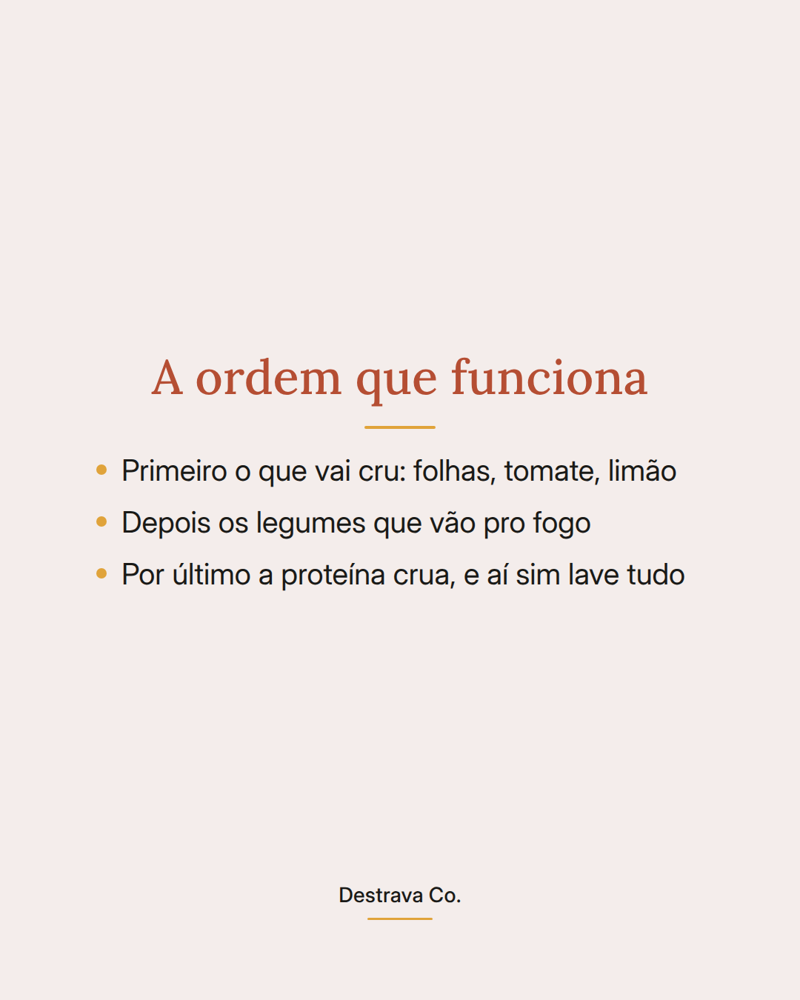
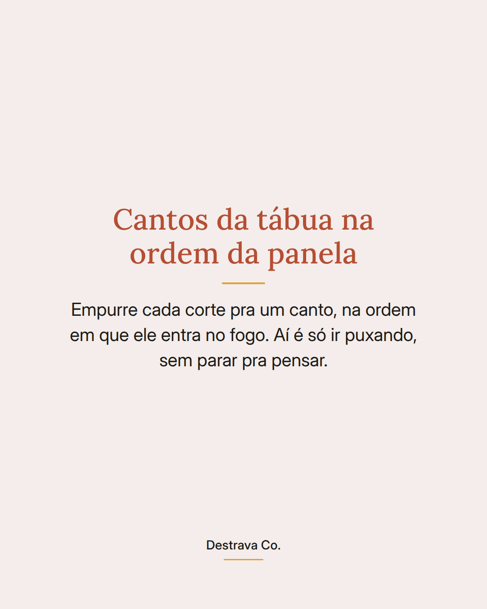
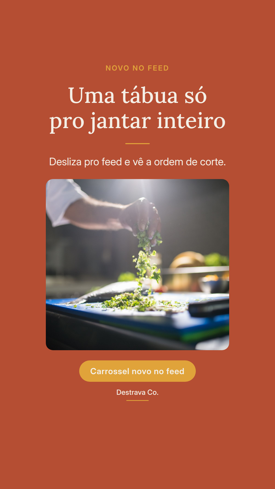

Cortar o jantar inteiro numa tábua só muda o ritmo da cozinha.
A ordem é simples: começa pelo que vai cru, folhas, tomate, limão. Depois os legumes que vão pro fogo. A proteína crua fica por último, e só então a tábua e a faca vão pra pia.
Assim você não para o preparo no meio pra lavar tudo de novo, e a pia não acumula três tábuas num jantar de quarta-feira.
Um detalhe que ajuda ainda mais: empurre cada corte pra um canto da tábua, na ordem em que ele entra na panela. Na hora do fogo, é só ir puxando.
Salva pra lembrar na próxima vez que for cozinhar com pressa e manda pra quem divide a cozinha com você. Se quiser preparos curtos pra testar isso hoje, o caderno com 20 receitas rápidas de até 15 minutos está liberado de graça.